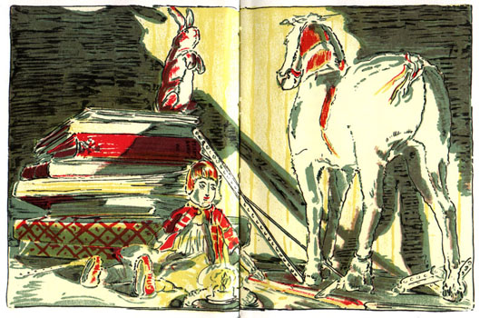
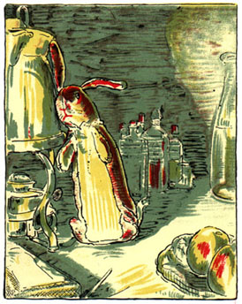

The Velveteen Rabbit

A soft and fluffy Velveteen Rabbit lived in a toybox in a Boy's room. Each day, the Boy opened the toybox and picked up Velveteen Rabbit. And Velveteen Rabbit was happy.
Then newer, brighter toys came into the toybox. They had special tricks. Some could move when the Boy pushed a button. Others bounced high.
Velveteen Rabbit had no special tricks or buttons. No wonder the Boy started to choose these other new toys.
At night, when the toys were back all in the toy box, the other toys talked with pride about the fine things they could do. Velveteen Rabbit was quiet. There was not much to say.
Only one other toy in the toy box was like Velveteen Rabbit. Cowboy Horse was also a soft, fluffy toy. But he was old. Most of his hair was worn away. He had only one eye left.
Cowboy Horse said to Velveteen Rabbit, “Soft toys like us are really the lucky ones. We get loved the most. And when soft toys get loved and loved, we can become Real.”
“What is Real?” said Velveteen Rabbit.
“Being Real is the best," said Skin Horse. "You can move when you want to move. When you are Real, if you are loved, you can show your love back.”
One day Nana, who took care of the Boy, flew open the lid of the toy box. She said in a busy tone, “Oh, dear! That walking doggie is missing. I must find something else for the Boy!” In a second, Velveteen Rabbit was plopped down onto the bed with the Boy.
This began another happy time for Velveteen Rabbit. Each night the Boy would hold Velveteen Rabbit close in his arms. In the morning, the Boy would show Velveteen Rabbit how to make rabbit holes under the sheets. If the Boy went outside to a picnic, or to the park, Velveteen Rabbit would come with him, too.
After awhile, with the hugging and holding, much of Velveteen Rabbit’s fur got matted down. Its pink nose grew less pink with all the Boy’s kisses. But Velveteen Rabbit did not care. It was happy.
One day the Boy became sick. His forehead got very hot. The doctor came and went. Nana walked back and forth in fear. Day after day, the Boy stayed in bed. There was nothing for Velveteen Rabbit to do but to stay in bed, too, day after day.
Then at last, the Boy got better. Such joy in the house! The doctor said the Boy must go to the shore. How wonderful! thought Velveteen Rabbit. Many times the Boy had talked happily about the shore, and told of its white sands and big blue ocean.
“What about this old bunny?” Nana asked the doctor.

“That old thing?” said the doctor. “It’s full of scarlet fever germs. Burn it at once! Get him a new bunny.”
So Velveteen Rabbit was thrown into a sack along with the Boy's bed sheets and old clothes and a lot of junk. The sack was carried to the backyard. The gardener was told to burn the whole thing.
But the gardener was too busy with picking the beans and peas before nightfall, so he left the sack behind. “I will take care of it tomorrow,” he said. The sack was not tied at the top, and Velveteen Rabbit fell out. The next day when the gardener picked up the sack to take it away to be burned, Velveteen Rabbit was not in it.
Then it started to rain. Velveteen Rabbit was sad. So far away from the Boy, never again to be nice and cozy together, and now soaking wet! A tear fell from Velveteen Rabbit’s eye, over his cheek. It plopped onto the grass.
All at once, at the spot where the tear fell, a flower grew up. Then the bud of the flower opened. A tiny Fairy!
“Little Rabbit,” said the Fairy. “Do you know who I am?”
“I wish I did,” said Velveteen Rabbit.
“I am the Fairy that takes care of toys that are well loved,” said the Fairy.
By then, Velveteen Rabbit was shabby and gray. The boy had loved off all of its whiskers. The pink lining in the ears had long turned grey. Its brown spots, once fresh and bright, were now faded and hard to see.
“It is time now for me to make you Real,” said the Fairy.
“I think I remember Real,” said Velveteen Rabbit. Now, what was it Cowboy Horse had said? Ah yes. When you are Real, you can move when you want to move. If you are loved, you can love back.
With one touch of the Fairy’s wand, Velveteen Rabbit felt different. Tickly. All of a sudden, each one of its two legs sewn together tight, could move!
A fly landed on Velveteen Rabbit’s head and it was itchy. As quick as a wink, that foot was up at the Velveteen Rabbit’s head to scratch it off.
“So this is being Real"! “I can move when I want to move!”
“I will show you some new friends,” said the Fairy. And the Fairy took Velveteen Rabbit where several rabbits ran and hopped about. Soon they were all great friends.
Time went by. The Boy was back from the shore. He was all better now.
One day, the Boy went to the backyard to play. From the trees nearby, a few rabbits hopped out. One rabbit was brown all over, and another one was all white. A third rabbit had brown spots, most of them faded. That one hopped the closest to the Boy.
The Boy thought, "Why, this rabbit looks just like my old Bunny that was lost when I was sick. I loved that Bunny!"
What he didn't know was that it was his very own Bunny, come back to see the boy. For he was the reason the Velveteen Rabbit had become Real.